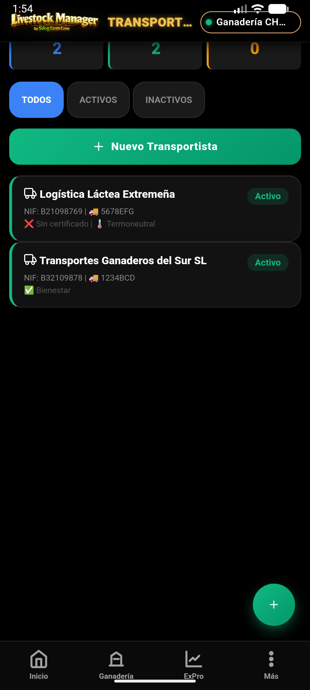

1. Acceso desde la Ficha Animal
El control reproductivo se realiza de forma individual para garantizar la trazabilidad madre-cría.
 En la Ficha del Animal, localiza el botón "GESTIÓN REPRODUCTIVA".
En la Ficha del Animal, localiza el botón "GESTIÓN REPRODUCTIVA".
- Selecciona una Hembra: Busca al animal en el listado de Ganadería → Animales.
- Historial Vivo: Pulsa sobre ella para ver su ficha y desliza hasta el botón de gestión.
2. El Wizard de Reproducción
Registra cada hito del ciclo biológico con un clic.

Wizard emergente para registro rápido de eventos.
- Evento: Selecciona entre Celo, IA, Monta, Diagnóstico, Parto o Aborto.
- Parto Inteligente: Si seleccionas "Parto", la app te pedirá el crotal de la cría y la vinculará automáticamente como madre.
- Cierre de Ciclo: Registra el "Secado" para preparar a la hembra para la siguiente lactación.
Livestock Manager Premium · v4.8.0 · Guía de Reproducción